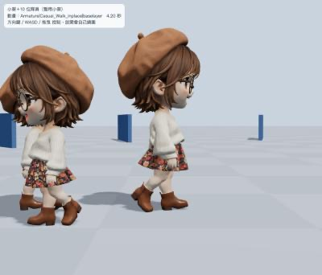
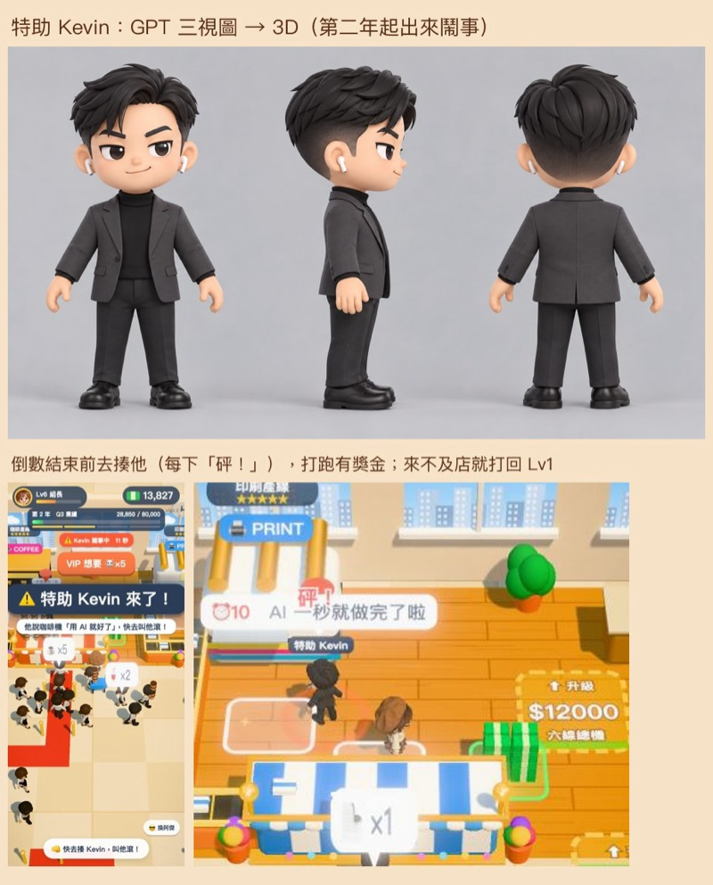

幫 Claude 接上網路服務：把角色圖變成會走路的 3D 模型
「連接器」就像幫 Claude 插上一條線，讓它可以直接操作別的網站服務。例子是用 Higgsfield 把 GPT 畫的三視圖變成 3D、加上走路動作，放進遊戲。
本課步驟（10 步）
常見卡關 · 影片大綱- 連接器（也叫 MCP）是什麼、授權是什麼意思
- 怎麼加入 Higgsfield 並登入授權
- 三視圖 → 3D 模型 → 綁骨架加走路動作，整個流程
- Claude 跳出詢問時，什麼該說好、什麼該說不
- 其他常用的連接：Gmail、Google 雲端、GitHub
連接器是什麼
Claude 本來只能在你的電腦裡做事。連接器讓它可以去操作網路上的服務，例如叫 Higgsfield 做 3D、幫你在 Gmail 寫草稿。
接上連接器要經過一次授權：你自己登入那個服務、按「允許」，服務會發一張「通行證」給 Claude。Claude 拿到的是通行證，不是你的密碼；不想用了，隨時可以在設定裡拔掉。
打開設定裡的「連接器」
在 Claude 的設定裡找到「連接器」（Connectors），會看到可以加入的服務清單。
需要：Claude 設定裡的連接器清單，看得到 Higgsfield、Gmail 等項目和「連接」按鈕。
加入 Higgsfield，登入授權
按 Higgsfield 旁邊的「連接」，會跳到 Higgsfield 的官方網頁。在那個網頁登入，看清楚它要的權限，按允許，回到 Claude。
帳號密碼只在服務的官方網頁輸入。Claude 的對話框裡不要打密碼、不要貼金鑰。
需要：按「連接」後跳出的 Higgsfield 登入／允許畫面。帳號資料會遮掉。
確認連上了
回到 Code 分頁，直接問：
Higgsfield 連上了嗎？我現在還有多少點？
Claude 會去查你的點數餘額。查得到就代表接好了。
實作 1：三視圖切成四個視角
要轉 3D 的服務（Tripo 多視角轉 3D）需要四張圖：正面、左側、背面、右側。Claude 會寫一個小程式，把 GPT 畫的三視圖切開，側面再左右翻一次當另一邊。
順序一定要對。真實踩過的坑：順序錯了，轉出來的頭會變形。
實作 2：轉成 3D 模型
把小葵的三視圖切成四個視角，用 Higgsfield 的 Tripo 多視角轉 3D。開始前先跟我說要花幾點。
Claude 會把四張圖上傳到 Higgsfield、送出轉檔、等它做好再下載模型檔（.glb）。這一步一個角色 9 點。
實作 3：綁骨架、加走路動作
模型轉好後只是一尊公仔，不會動。再請 Higgsfield 綁骨架並加一段動作（慢走、小跑），一個角色加一段動作 8 點。

真實踩過的坑：
- 沒先轉正就綁骨架：角色走路像螃蟹橫著走。要請 Claude 先把模型的臉轉到正前方再綁。
- 步伐太怪：動作播太快、腳會滑。Claude 會量動作原本的步幅，讓播放速度配合移動速度。
- 驗收時看側面走路最準。

實作 4：放進遊戲
模型檔太大手機會跑不動，Claude 會先壓縮（大約 5 MB 壓到 0.4 MB），再放進遊戲。整個《上班啟示錄》的 3D 一共花了大約 176 點。

跳出詢問時：什麼該說好、什麼該說不
用連接器時，Claude 每次要動用那個服務都可能先問你。判斷方法：
| 它要做的事 | 例子 | 怎麼辦 |
|---|---|---|
| 查資料、看餘額 | 查 Higgsfield 點數、找某封信 | 允許 |
| 花錢、花點數 | 轉 3D、生影片 | 先問「要花多少點？」，數字合理再允許 |
| 代表你對外發東西 | 寄信、發文、公開上傳 | 先看清楚內容和對象再允許 |
| 刪除 | 刪檔案、刪信 | 除非你明確要它刪，否則拒絕 |
不確定就按「拒絕」，然後問「你剛剛要做什麼？為什麼？」。拒絕不會壞掉任何東西，Claude 會換方法或解釋給你聽。
其他常用的連接
- Gmail：「幫我找上週托育中心寄來的信」「照這封信寫一封回覆草稿」。草稿可以先寫，寄出前 Claude 一定會先問你。
- Google 雲端／文件：讀雲端上的資料、把成品存成 Google 文件。
- GitHub：把遊戲放上網。這個不是在連接器頁面接，而是電腦上的 GitHub 工具，第一次在瀏覽器授權一次，第 5 課會教。
授權完了 Claude 還說沒連上：回到設定的連接器頁看狀態，必要時重新連一次，再開一個新對話試試。
點數不夠：先問 Claude「這樣做要花多少點」，再決定要不要儲值，或先做最重要的角色。
上傳圖片失敗：請 Claude 換個方式重傳。如果一直失敗就停下來，請它說明卡在哪裡。
3D 角色的頭變形：四個視角的順序錯了。正面、左側、背面、右側。
角色走路像螃蟹：綁骨架前沒有先把臉轉到正前方，要重新轉正再綁一次（會再花點數，所以第一次就要提醒 Claude）。
不小心按了允許：大部分動作可以補救。馬上告訴 Claude「剛剛那個先停下來」，問它做了什麼。
| 鏡頭 | 畫面 | 旁白重點 |
|---|---|---|
| 1 | 小葵三視圖 → 3D 模型轉一圈 → 在遊戲裡走路 | 「一張圖，變成會走路的 3D 角色。」 |
| 2 | 插頭動畫：Claude 接上 Higgsfield、Gmail、GitHub | 連接器＝讓 Claude 操作網路服務；授權給的是通行證，不是密碼 |
| 3 | 設定 → 連接器 → 連接 Higgsfield（帳號打碼） | 密碼只在官方網頁輸入 |
| 4 | 對話：「我還有多少點？」 | 查得到點數就是接好了 |
| 5 | 三視圖切成四格，標順序 | 正、左、背、右，順序錯頭會變形 |
| 6 | 對話：「開始前先說要花幾點」 | 轉 3D 9 點、綁骨架加動作 8 點 |
| 7 | 螃蟹走路 vs 正常走路（側面） | 綁骨架前先轉正，看側面驗收 |
| 8 | Kevin 在遊戲裡走 | 壓縮後放進遊戲，整個專案約 176 點 |
| 9 | 允許／拒絕對照表 | 查資料可以，花錢、對外發、刪除要看清楚 |
| 10 | Gmail、Google、GitHub 三張卡 | 其他常用連接，GitHub 下一課教 |